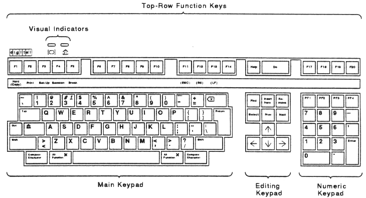
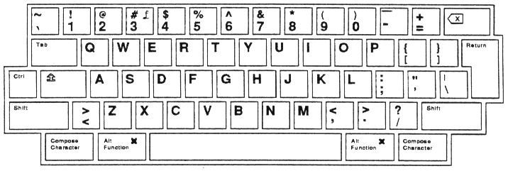
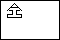
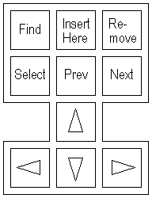
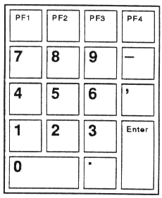
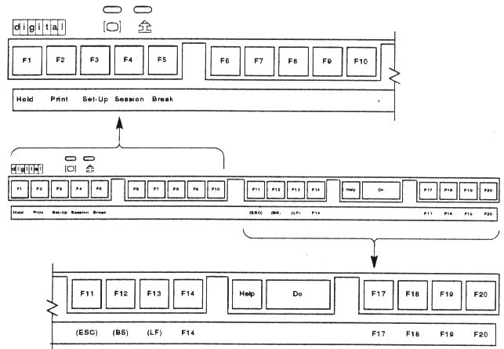
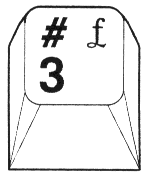
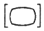
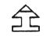
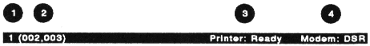

| Chapter 3 | Contents | Chapter 5 |
This chapter describes the basic function of each keyboard key and indicator. The chapter also describes two status lines you can display on the screen, the terminal status line and keyboard indicator line. Later chapters provide more information on keys with special functions.
NOTE: A list of common keyboard functions appears at the end of this guide. You can keep a copy of the list near the terminal, as a quick-reference tool.
The VT420 uses Digital's LK401, keyboard, which comes in many models for use in different countries. Most models are available in a standard or word processing (WPS) version. The only physical difference between all keyboards are the legends on the keys. Appendix D shows the standard versions and the WPS version of the North American/United Kingdom dialect.
The figures in this chapter show the North American/United Kingdom version of the standard LK401 keyboard, unless otherwise noted.
The VT420 has a keyboard dialect feature that is initially set to the North American Keyboard. If you have a keyboard for a different country or want to use the British dialect, you must change the setting of keyboard dialect feature in the Set-Up Directory screen. Chapter 3 describes how to select the correct keyboard dialect.
The LK401 keyboard has four groups of keys and two indicator lights. The keys are grouped by function.
The LK410 keyboard also has two audible indicators, a keyclick and bell.

The layout of the main keypad is similar to a typewriter keyboard, with alphanumeric characters, punctuation marks, and Shift keys. The main keypad also has a number of keys not found on a typewriter, such as the Ctrl modifier key and the Compose Character prefix keys. The German keyboard has a Group Shift key and Alternate Shift key instead of Compose Character keys.
Modifier keys are pressed in combination with another key, to modify the code sent by that key. Prefix keys are pressed and released before pressing another key, to change the function of one or more keystrokes.

The main keypad has the following special-function keys:
| Tab | Pressing Tab sends a horizontal tab, which normally moves the cursor to the next tab stop. You can select the tab stops on the Tab Set-Up screen (Chapter 5). Applications can also change tab stops. |
| Ctrl | Holding down Ctrl and pressing another key sends a control code to the host. For example, Ctrl Z means to hold down Ctrl and press the Z key. |
|  | Pressing the lock key down puts the keyboard in caps lock mode or shift lock mode. You can select the mode from Keyboard Set-Up screen (Chapter 5). The default setting is caps lock mode.
When the lock key is down, the lock indicator turns on and the lock symbol (or the word Lock) appears on the keyboard indicator line. |
| Shift (left and right) | Holding down Shift and pressing a standard key sends the shifted (top) character on the key. Holding down Shift and pressing a special-function key starts a predefined control function. For example, Shift F2 (Print) means to hold down Shift while pressing the F2 (Print) key. |
| Return | Pressing Return sends either a carriage return or a carriage return and a line feed (selected in the General Set-Up screen, Chapter 5). Pressing Return normally moves the cursor to the beginning of the next line. |
Pressing the You can make the |
|
| Space bar | Pressing the space bar sends an SP (space) character. You use spaces to separate words or move the cursor forward. |
| Compose Character (left and right) | These are prefix keys, used to generate characters that do not appear as standard keys on your keyboard. See Chapter 6. On the German keyboard, the Compose Character key is replaced by Group Shift and Alternate Shift. |
| Group Shift Alternate Shift (German) | You use Group Shift as a prefix or modifier key, to type the characters on the right half of keycaps. See Chapter 6. Alternate Shift is a modifier key, used to generate a no break space (NBSP) or soft hyphen (SHY) character. Alternate Shift + space bar = NBSP character. |
| Alt Function (left and right) | You use Alt Function with other keys, to select alternate functions defined by your application software. The Alt Function keys send unique function sequences to the host, when they are pressed or released. For more information, see the VT420 Programmer Reference Manual. |
The editing keypad has four arrow keys and six editing keys.
Pressing an arrow key normally moves the cursor in the direction of the arrow. For example, pressing the key moves the cursor down one line.
You can use the editing keys in several ways.
|  |
Numeric keypad keys often have functions assigned by application software, especially PF1 to PF4. See your application software manuals for information about those keys.
You can use the numeric keypad to enter numeric data as you would with a calculator. Programmers can use this keypad to do hexadecimal compose sequences. See "Hexadecimal Key Sequences" at the end of Chapter 6.
|  |
| Enter | The Enter key on the numeric keypad has several
functions
Application software may use Enter as a special-function key. |
| , (Comma) . (Period) |
If you use the German Keyboard, Spanish Keyboard, or Portuguese Keyboard setting for the keyboard dialect feature in the Set-Up Directory, the . (period) and , (comma) keys on the numeric keypad are reversed to match the European convention for numeric entry. |
You can choose the keypad mode from the General Set-Up screen.
NOTE: The German keyboard dialect does not affect the application keypad mode.
The first five top-row keys, F1 to F5, are predefined to perform the following functions. Normally, you do not change these functions. If needed, you can change the functions from the Keyboard Set-Up screen (Chapter 5).
|  |
| F1 (Hold) | Pressing F1 (Hold) puts the screen display on hold. This stops the scrolling of text on the screen, for easy reading. The hold indicator turns on and Hold appears on the keyboard indicator line. Pressing F1 (Hold) again releases the screen display and allows scrolling to resume. With Two Sessions When you run two sessions (Chapter 7), F1 (Hold) only affects the active session. |
| Ctrl F1 | Pressing Ctrl F1 (Hold) puts the screen display for the inactive session on hold. Pressing Ctrl F1 again releases the screen display for the inactive session. NOTE: The hold function does not work if you set the XOFF feature to No XOFF in the Communications Set-Up screen (Chapter 9). |
| F1 and editing keys | Pressing F1 (Hold) with specific keys on the editing keypad performs the copy and paste operation. See "Copying and Pasting Text" in Chapter 7. |
| F2 (Print) | Pressing F2 (Print) sends a page of text from the current session to the printer connected to the rear of the VT420. The terminal sends the page that contains the cursor. A page may or may not correspond to the screen display. This depends on the set-up settings for page size, font size, and page coupling features, as well as the size of the screen window for the current session. You can change the page size and other features from the Display Set-Up screen (Chapter 5). |
| Ctrl F2 | Ctrl F2 (Print) turns auto print mode on or off. In auto print mode, you can automatically print each line of text as it is received from the host system. See "Selecting a Print Mode" in Chapter 8. |
| F3 (Set-Up) | You press F3 (Set-Up) to enter or leave set-up. When you enter set-up, the terminal displays the Set-Up Directory screen. You can leave set-up from any set-up screen. Chapter 5 describes set-up. |
| Ctrl F3 | Pressing Ctrl F3 (Set-Up) while in set-up causes the terminal to perform a power-up reset. This resets many set-up features for both sessions to their saved settings. For more information, see the reset to initial state (RIS) function in the VT420 Programmer Reference Manual. |
| F4 (Session) | Pressing F4 (Session) changes the active session when you use two sessions. You can switch from session 1 to session 2, or from session 2 to session 1. F4 (Session) does not work when
|
| Ctrl F4 | Pressing Ctrl F4 (Session) lets you divide the screen into two windows. Windows let you display two sessions at one time. Pressing Ctrl F4 (Session):
|
| F5 (Break) | Pressing F5 (Break) generates a break signal on the communication port associated with the current session. Some communication equipment recognizes break as a special attention signal. See your communication equipment manual for details. |
| Shift F5 | Pressing Shift F5 (Break) performs a disconnect on the serial communication port associated with the current session. A disconnect normally ends communication with a modem to prepare for another call. |
| Ctrl F5 | Pressing Ctrl F5 (Break) sends the answerback message to the active session. See the Keyboard Set-Up screen in Chapter 5. NOTE: Ctrl F5 (Break) sends the answerback message even if you set the conceal answerback message feature in the Communication Set-Up screen (Chapter 5). |
The function of the remaining top-row keys (F6 to F20) often depends on your application software. Refer to your application software manuals for a description of key functions. You can also define the function of these keys yourself.
| F6 to F20 | When pressed alone, these keys send predefined programming sequences to the host system (Chapter 9). Applications that recognize these sequences can use the keys to perform various functions. In VT100 and VT52 modes NOTE: In VT400 mode, you can use the ~ key to send the ESC character. See the Keyboard Set-Up screen in Chapter 5. |
| Shift F6 to Shift F20 | User-defined keys (UDKs) |
Most versions of the LK401 keyboard have some keys with characters on the left half and right half of their keycap. Normally, you use the characters on the left half of the key. These are called typewriter characters. The characters on the right half are for data processing use.
You can set these keys to send their typewriter or data processing characters, by using the typewriter/data processing feature on the Keyboard Set-Up screen (Chapter 5). One exception is the North American/United Kingdom keyboard.
The North American/United Kingdom standard keyboard has only one key with three characters.
|  |
To use the £ symbol, you select the British Keyboard setting in the Set-Up Directory screen. To use the # symbol, you select the North American Keyboard setting. There are no separate data processing legends on the North American/United Kingdom keyboard.
You can type compose sequences to display many more characters than those shown on the keycaps. For example, you can display accented letters. Chapter 6 describes how to use compose sequences.
The keyboard has two indicator lights, hold and lock. When they are activated, Hold and Lock appear on the keyboard indicator line.
|  | Turns on or off when you press the F1 (Hold) key. |
|  | Turns on or off when you press the lock key. |
The keyboard has two audible indicators, a keyclick and a bell. You can use a margin bell, warning bell, or both. You select the keyclick and bell setting from the Keyboard Set-Up screen (Chapter 5).
You hear the keyclick sound each time you press a key that sends a code or causes the terminal to take some immediate action. If a key is autorepeating, the keyclick will repeat once for each character or key sequence sent. Keys do not click under the following conditions:
The bell tone is a beeping sound. You can use the bell as a margin bell, warning bell, or both.
This bell sounds when the cursor is eight characters from the right margin.
This bell sounds for any of the following conditions:
The keyboard indicator line appears at the bottom of the screen, below the status line. When you use two sessions, there is only one keyboard indicator line for both sessions.
The keyboard indicator line displays text in the smaller, 132-column font and appears in the same video background as the main display.
The keyboard indicator line has six fields that show you:
Table 4-1 describes each field.
| Field | Value | Indicates |
|---|---|---|
| * This field appears in reverse video of the keyboard indicator line. | ||
| 1 | Active session | |
| Session 1 | Session 1 is active | |
| Session 2 | Session 2 is active | |
| Inactive session activity* | ||
| Session 1 | Session 1 is active. Session 2's page memory is being updated since it was last active. | |
| Session 2 | Session 2 is active. Session 1's page memory is being updated since it was last active. | |
| 2 | Copy | A copy and paste operation is in progress. |
| 3 | Hold | The screen is on hold. |
| 4 | Lock | Caps-Lock or Shift-Lock in the Keyboard Set-Up screen is in effect. |
| 5 | Compose | A compose sequence is in progress. |
| 6 | Wait | The keyboard is in a wait state and unable to accept typed keystrokes. |
The VT420 screen can display a status line that provides information about the terminal's current operations. If you are running one session, the status line appears at the bottom of the screen. If you run two sessions, a default status line appears at the bottom of each session. By default, the status line is disabled.
You can select when to display the status line. You can also let host applications write messages on the status line. To make these selections, you use the status display feature in the Display Set-Up screen (Chapter 5).
The status display feature has three settings.
| No status display (default) | The status line appears when
|
| Indicator status display | The status line appears at all times, providing information on the screen (Table 4-2). |
| Host-writable status display | Applications can write messages on the status line. |
NOTE: The VT420 uses separate set-up settings for each session. Any changes you make only apply to the session you are in. If you want to change a set-up setting for two sessions, you must make the change in each session.
The default status line has four fields that show you:
Table 4-2 describes each field. When you select a host-writable status line, applications on your host system can use the status line to send you messages.
You can display the status line in English, French, or German. Use the set-up language feature in the Set-Up Directory screen to select the dialect.
|  |
| Field | Value | Indicates |
|---|---|---|
| *These page numbers never appear when you use two sessions. Each session can only use three pages. | ||
| †Field 4 is blank, unless you have a modem connected to the Comm1 RS-232 connector and Modem Control is selected in the Communication Set-Up screen. | ||
| 1 | Page displayed on screen (from page memory) | |
| 1 | Page 1 | |
| 2 | Page 2 | |
| 3 | Page 3 | |
| 4 | Page 4* | |
| 5 | Page 5 | |
| 6 | Page 6* | |
| 2 | Cursor position | |
| (x,y) | Text cursor position | |
| x = row (1 to 144). | ||
| y = column (1 to 132). | ||
| You can use the 80/132 column mode feature in the Display Set-Up screen to select 80 or 132 columns. | ||
| 3 | Printer Status | |
| Printer: Ready | The printer can receive data for printing (on-line). | |
| Printer: Not Ready | The printer is not ready to receive data for printing (off-line). | |
| Printer: None | The printer is off or not connected to the VT420. | |
| Printer: Auto Print | The VT420 is in auto print mode. The terminal sends the current display line to the printer when the cursor moves to the next line. To select auto print mode, press Ctrl F2 (Print). See Chapter 8. |
|
| Printer: Controller | The VT420 is in printer controller mode. You cannot select this mode from the terminal. The host system selects printer controller mode. | |
| Printer: Busy | The printer is busy printing data from the other session. | |
| Printer: Assigned to 1 (or 2) | The printer is assigned to the other session. | |
NOTE: Use the printer assignment feature in the Global Set-Up screen to assign the printer. |
||
| 4 | Modem status† | |
| Modem: DSR | There is a call connected on the modem. | |
| Modem: No DSR | The terminal can send commands to the modem, but there is no call connected. | |